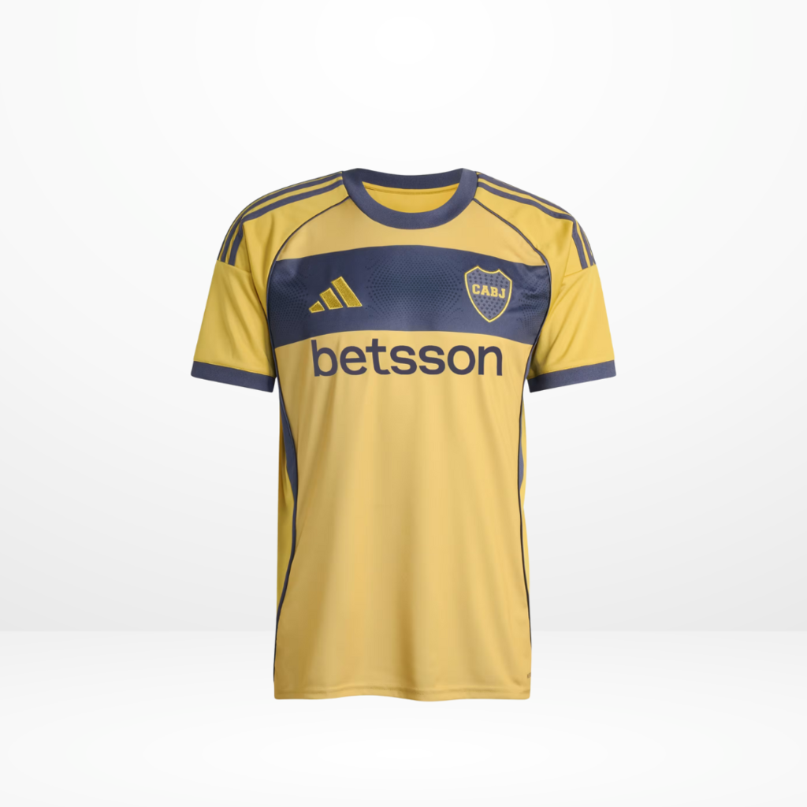
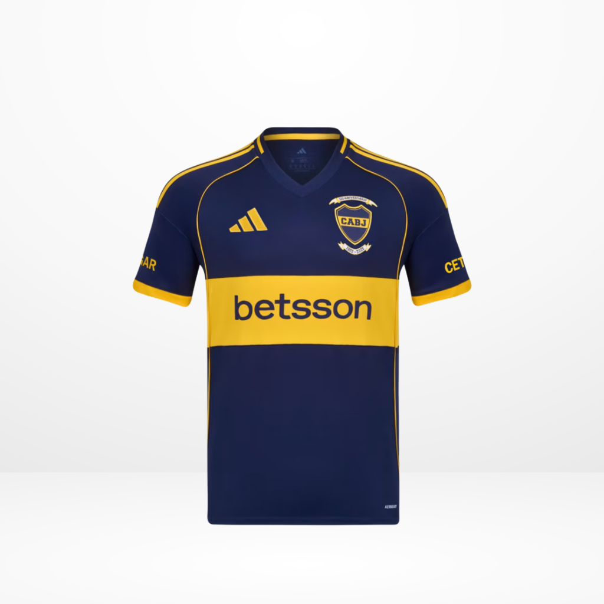
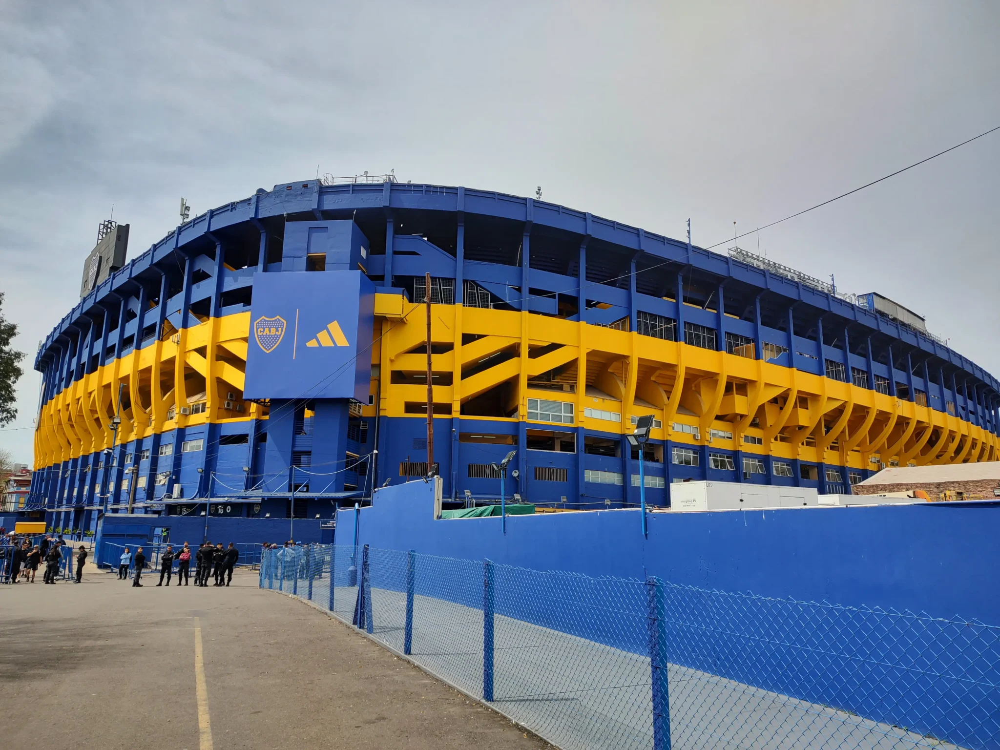

HISTORIA
Fundación: 1905, barrio de La Boca.
Apodo: Xeneize, El Club del Pueblo.
Palmarés destacado:
35 Ligas argentinas
6 Copas Libertadores
3 Copas Intercontinentales
Historia:
Boca es uno de los clubes más populares del continente. Reconocido por su garra y su histórica Bombonera, ha tenido grandes figuras como Riquelme, Maradona y Palermo. Enfrenta a River en el superclásico más famoso de América. Fue campeón mundial en tres ocasiones y es el club argentino con más títulos internacionales
oficiales.
PRÓXIMOS PARTIDOS
| Día | L/V | vs Equipo | Hora |
| 13/07 | V | Argentinos | 14:00 |
| 20/07 | L | Unión | 14:00 |
| 27/07 | V | Huracán | 14:00 |
| 30/07 | L | Atl. Tucumán | 12:00 |
| 10/08 | L | Racing | 14:00 |
PLANTEL
| Jugador |
Edad |
Nacimiento |
Altura |
| Miguel Ángel Russo (Entrenador) |
68 |
04/09/1956 |
|
| ARQUEROS |
| Sergio Romero | 38 | 22/02/1987 | 1.92 |
| Leandro Brey | 22 | 21/09/2002 | 1.91 |
| Javier García | 38 | 29/01/1987 | 1.80 |
| Agustín Marchesín | 37 | 16/03/1988 | 1.88 |
| DEFENSORES |
| Cristian Lema | 34 | 12/09/1990 | 1.90 |
| Marcelo Saracchi | 27 | 23/04/1998 | 1.72 |
| Jorge Nicolás Figal | 31 | 03/04/1994 | 1.81 |
| Marcos Rojo | 35 | 20/03/1990 | 1.84 |
| Luis Advíncula | 35 | 02/03/1990 | 1.78 |
| Frank Fabra | 34 | 22/02/1991 | 1.73 |
| Lautaro Blanco | 26 | 19/02/1999 | 1.83 |
| Juan Barinaga | 24 | 10/10/2000 | 1.79 |
| Marco Pellegrino | 22 | 18/07/2002 | 1.84 |
| Ayrton Costa | 25 | 07/12/1999 | 1.79 |
| Lautaro Di Lollo | 21 | 10/03/2004 | 1.87 |
| Lucas Blondel | 28 | 14/09/1996 | 1.78 |
| MEDIOCAMPISTAS |
| Rodrigo Battaglia | 33 | 12/07/1991 | 1.87 |
| Ignacio Miramon | 22 | 12/06/2003 | 1.73 |
| Williams Alarcón | 24 | 20/11/2000 | 1.82 |
| Agustín Martegani | 25 | 20/03/2000 | 1.85 |
| Ander Herrera | 35 | 14/08/1989 | 1.82 |
| Kevin Zenón | 23 | 30/07/2001 | 1.77 |
| Malcom Braida | 28 | 17/05/1997 | 1.75 |
| Tomás Belmonte | 27 | 27/05/1998 | 1.78 |
| Esteban Rolón | 29 | 25/09/1995 | 1.78 |
| Camilo Rey | 19 | 10/03/2006 | 1.75 |
| Milton Delgado | 20 | 16/06/2005 | 1.66 |
| DELANTEROS |
| Exequiel Zeballos | 23 | 24/04/2002 | 1.74 |
| Carlos Palacios | 24 | 20/07/2000 | 1.80 |
| Milton Giménez | 28 | 12/08/1996 | 1.84 |
| Édinson Cavani | 38 | 14/02/1987 | 1.84 |
| Lucas Janson | 30 | 16/08/1994 | 1.69 |
| Miguel Merentiel | 29 | 24/02/1996 | 1.76 |
| Alan Velasco | 22 | 27/07/2002 | 1.67 |
| Brian Aguirre | 22 | 06/01/2003 | 1.74 |
| Santiago Dalmasso | 21 | 18/06/2004 | 1.83 |


